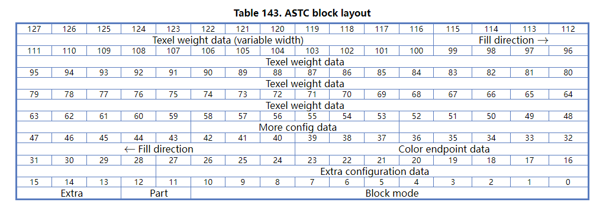
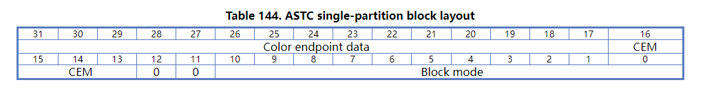
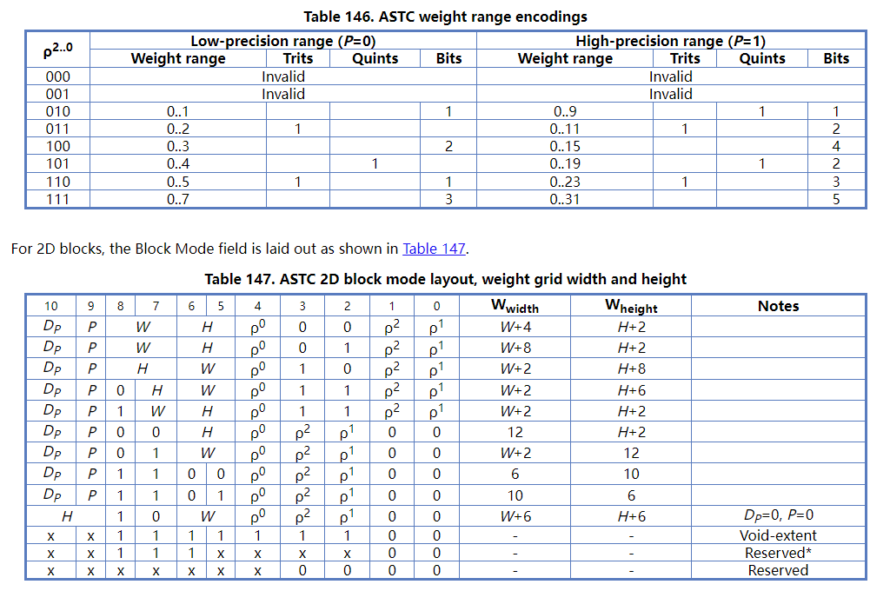
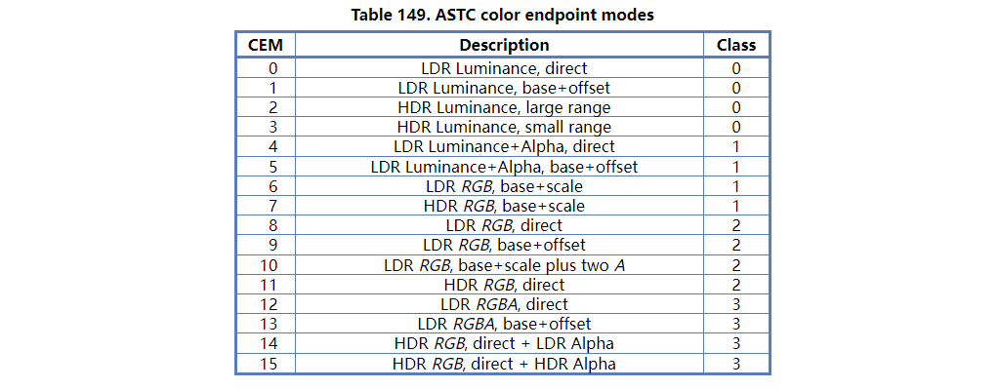
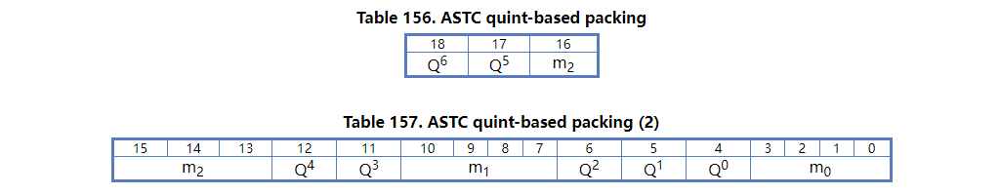

# ASTC 纹理格式

一般的纹理压缩格式都有两个要素，color endpoint 和 weight grid，即端点颜色和权重表，具体的数据部分由权重表示，在解压时通过权重从两个端点颜色之间插值出结果颜色。
weight grid 数据部分的大小定义为 grid size。另一个和 size 相关的概念是 block size，表示将几乘几的像素一起进行压缩。ASTC 格式的压缩结果都是 128 bits，ASTC4X4 就是将 4X4 的像素压缩到 128 bits，这样平均每个像素有 8 bits 数据；ASTC6X6 则是将 6X6 的像素数据压缩到 128 bits，平均每个像素有 3 bits 数据。这里一个需要注意的地方是 grid size 和 block size 不一定相等，如果不等的话，解码时会将 weight grid 的数据进行插值得到符合 block size 的数据结果。
block size 对整张纹理来说都是相同的，其他的参数则不一定，比如 partition、dual plane、block mode 等，这些在每一个 block 中都可能不同。上面说的 grid size 是 block mode 字段的一部分。
partition 是指一个 block 可以分为不同的部分，每个都有对应的 color endpoint，可以有 1~4 个 partition。dual plane 是指像素四个通道可以有一个通道单独进行编码，这可能是因为这个通道的数据与其他通道不存在相关性。如果存在 dual plane，则最多只能有 3 个 partition，因为 dual plane 会包含两组 weight grid。
综上所述，ASTC 中最简单的参数是只有一个 partition、没有 dual plane。这时 block 参数部分会占用 17 bits，剩下的 111bits，地址从大到小存放 weight grid 编码结果，通过 weight grid 的占用情况确定 color endpoint 的编码格式（选择最能充分利用剩余空间的编码），color endpoint 的编码结果按地址从小到大存放。

对 block mode 的解析：

对 color endpoint modes 的解析：

最简单的是 8 和 12，直接将 color endpoint 进行编码。
参数完全确定之后，就是数据的编码方式，编码使用 Integer Sequence Encoding 编码方法。基本思想是，如果对于五个 0~2 的数，每个二进制有 2 bits，直接按二进制单独编码需要 10 bits，如果将他们一起编码，总共有 种情况，可以用 8 bits 进行编码，因为 8 bits 能表示 256 种情况，大于需要的 243 种。类似的还有 ，也就是用 7 bits 表示三个范围在 0~4 的数。

# 参考资料
ASTC 格式剖析及其 GPU 编码实现 - 知乎 etnlGD
Khronos Data Format Specification
Compressed GPU texture formats – a review and compute shader decoders – part 3/3